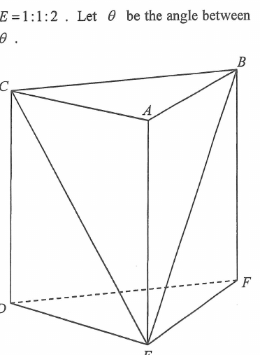

拖動旋轉 · 雙指／滾輪縮放 — drag to rotate, pinch or scroll to zoom
Question
The figure shows the right prism \(ABCDEF\), where \(AB:AC:AE=1:1:2\). Let \(\theta\) be the angle between the plane \(ABC\) and the plane \(BCE\). If \(\angle BAC=90^\circ\), find \(\sin\theta\).
A. \(\tfrac13\)
B. \(\tfrac23\)
C. \(\tfrac{\sqrt2}{4}\)
D. \(\tfrac{2\sqrt2}{3}\)

Figure (original exam diagram)
Step 1 · Scale the prism
Take \(AB=1,\ AC=1,\ AE=2\). The right prism has vertical edge \(AE\) standing on the base \(BCFE\).
Key idea: because the ratio is \(1:1:2\), we can freely choose the unit length.
Step 2 · Assign coordinates
Put the base plane \(z=0\), with \(A\), \(B\), \(C\) on the top face \(z=2\):
Step 3 · Line of intersection, and the perpendicular in plane \(ABC\)
Angle Between Two Planes\(\text{angle between the planes}=\text{angle between the perpendiculars to the line of intersection}\)One perpendicular is drawn in each plane at the same point \(M\) of the common line \(BC\); the angle between those two lines is the angle between the planes.
Both planes contain \(B\) and \(C\), so their line of intersection is \(BC\).
Let \(M\) be the mid-point of \(BC\): \(M=\left(\tfrac12,\tfrac12,2\right)\). Since \(AB=AC=1\), the median \(AM\) drawn to the base \(BC\) of the isosceles triangle \(ABC\) is perpendicular to \(BC\), and \(AM\) lies in the plane \(ABC\).
Isosceles Triangle: Median to the Base\(EB=EC\ \Longrightarrow\ EM\perp BC\)\(M\) is the mid-point of \(BC\), so \(EM\) is the median of the isosceles triangle \(EBC\) and is perpendicular to the base \(BC\).
By the distance formula, \(EB=\sqrt{1^{2}+0^{2}+2^{2}}=\sqrt5\) and \(EC=\sqrt{0^{2}+1^{2}+2^{2}}=\sqrt5\), so \(\triangle EBC\) is isosceles with \(EB=EC\). Its median \(EM\) to the base \(BC\) is therefore perpendicular to \(BC\), and \(EM\) lies in the plane \(BCE\).
Step 5 · Compute \(\sin\theta\) from triangle \(AME\)
Sine Ratio in a Right Triangle\(\sin\theta=\dfrac{\text{opposite}}{\text{hypotenuse}}\)\(\triangle AME\) is right-angled at \(A\), so \(\sin\angle AME=\dfrac{AE}{ME}=\dfrac{2}{3\sqrt2/2}=\dfrac{2\sqrt2}{3}\).
The angle between the planes is \(\theta=\angle AME\), because \(AM\perp BC\) in plane \(ABC\) and \(EM\perp BC\) in plane \(BCE\).
In \(\triangle AME\): \(AE=2\), \(AM=\dfrac{\sqrt2}{2}\) and \(ME=\dfrac{3\sqrt2}{2}\). Since
\[AM^{2}+AE^{2}=\tfrac12+4=\tfrac92=ME^{2},\]
the converse of Pythagoras' Theorem gives \(\angle MAE=90^\circ\): the triangle is right-angled at \(A\), with hypotenuse \(ME\). Hence
Check with the cosine formula: \(\cos\theta=\dfrac{AM}{ME}=\dfrac{1}{3}\), and \(\left(\tfrac13\right)^{2}+\left(\tfrac{2\sqrt2}{3}\right)^{2}=\tfrac19+\tfrac89=1\) ✓
Answer
D — \(\dfrac{2\sqrt2}{3}\)
PRACTICESimilar question — try it yourself
Question. In the figure, \(ABCD\) is a right prism with \(AB=2\), \(AC=2\) and \(AE=1\), where \(AE\) is a vertical edge. Find the sine of the angle between the plane \(ABC\) and the plane \(BCE\). (4 marks)
Show the worked solution
Step 1. Take coordinates \(A=(0,0,1)\), \(B=(2,0,1)\), \(C=(0,2,1)\) and \(E=(0,0,0)\), which realises \(AB=AC=2\) and \(AE=1\).
Step 2. The two planes share \(B\) and \(C\), so the line of intersection is \(BC\), and \(M=(1,1,1)\) is its mid-point. Since \(AB=AC=2\), the median \(AM\perp BC\), with \(AM=\sqrt{1^{2}+1^{2}}=\sqrt2\).
Step 3. \(EB=\sqrt{2^{2}+1^{2}}=\sqrt5=EC\), so the median \(EM\) of the isosceles triangle \(EBC\) is perpendicular to \(BC\), and \(EM=\sqrt{1^{2}+1^{2}+1^{2}}=\sqrt3\).
Step 4. The angle between the planes is \(\angle AME\). Here \(AM^{2}+AE^{2}=2+1=3=ME^{2}\), so \(\angle MAE=90^{\circ}\) and \(\sin\theta=\dfrac{AE}{ME}=\dfrac{1}{\sqrt3}=\dfrac{\sqrt3}{3}\).